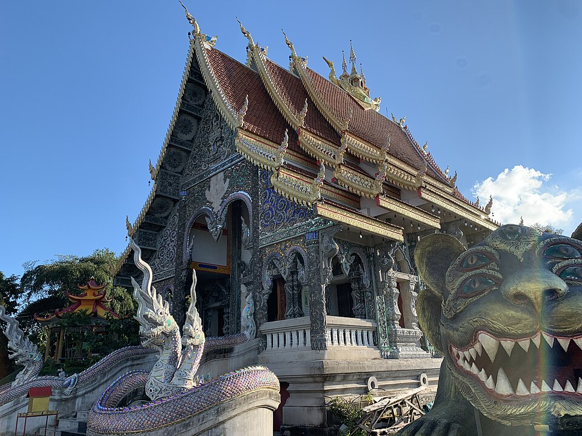

วัดพระธาตุดอยเขาควายแก้ว · Wat Phra That Doi Khao Khwai Kaeo
มีข้อมูลบางส่วนแล้ว — ช่วยเติมให้ครบได้ฟรี · Some details on record — help fill in the rest, free.

📷 Chainwit. — CC BY-SA 4.0, via Wikimedia Commons
ตำแหน่งโดยประมาณ — วงกลมคือช่วงที่เป็นไปได้ · Approximate position — the circle is the range it could be in
🐜 ที่นี่ไม่มีเว็บของตัวเอง — หน้านี้คือที่บันทึกของมดแดง ใช้อ้างอิงและแชร์ได้เลย · This place keeps no website of its own — so this page is the record. Cite it, share it, link to it. เจ้าของยืนยันข้อมูลได้ฟรีที่นี่เจ้า · Owners: claim and correct it here, free
- หมวด · Category
- วัด-สิ่งศักดิ์สิทธิ์ · Wats & Sacred Places
- ชื่ออังกฤษ · English name
- Wat Phra That Doi Khao Khwai Kaeo
- แผนที่ · Map
- OpenStreetMap · Google Maps
อ่านต่อที่อื่น · Read more elsewhere
- 😎 หน้าภาพในวิกิมีเดียคอมมอนส์ · Wikimedia Commons file page
- 😎 วัดนี้ในคลังวิชา — ประวัติ ความเชื่อ และการปฏิบัติ · This temple in the wichaa archive — its history and practice
😎 = พาไปอ่านเรื่องของที่นี่โดยตรง ไม่ใช่ปุ่มแชร์หรือลิงก์ประจำทุกหน้า · 😎 marks a link about this place itself — not a share button or something every page carries
🐜 ช่วยเติมเบอร์โทร และ LINEได้ไหมเจ้า · Could you help add phone and LINE? ขึ้นทันทีเลย · It shows at once.

_-_img_06.jpg){kind=link}
ข้อมูลจาก OpenStreetMap · Data from OpenStreetMap · 2026-07-21